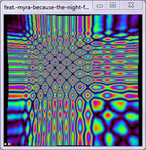
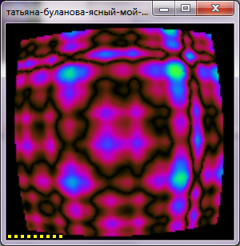
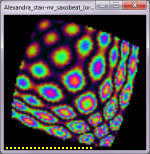
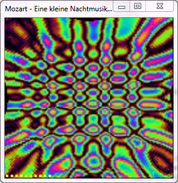
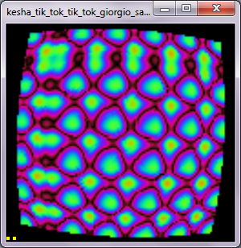
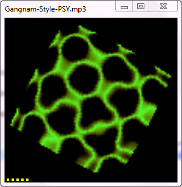

Наименование
- SeeMuz. Программа аудиовизуализации
Версия
- 2017.06.14
Код обозначения
- АБВГД.00000-00 34 01
Аннотация
Назначение документа
- Настоящее руководство распространяется исключительно на программу и не заменяет учебную, справочную литературу, руководства от производителя ОС и прочие источники информации, освещающие работу с графическим пользовательским интерфейсом операционной системы
Краткое изложение основной части документа
- В руководстве изложены основные условия функционирования, установка, интерфейс и порядок работы оператора с программой SeeMuz.exe (далее SeeMuz).
Назначение программы
Сведения о назначении программы
- Программа предназначена для воспроизведения и визуализации аудиофайлов в формате mp3.
Информация достаточная для понимания функций программы и её эксплуатации
- SeeMuz воспроизводит указанный оператором список аудиофайлов и преобразует получаемый аудиопоток в последовательность зрительных образов.
- Основная цель программы - исследование возможностей визуализации аудио.
- Задача создать полноценный аудио-плеер не ставилась.
Условия выполнения программы
Условия, необходимые для выполнения программы
- Программа работает на компьютерах в условиях удовлетворяющих требованиям эксплуатации компьютеров непромышленного исполнения.
Минимальный состав технических средств
- Монитор 19";
- Клавиатура QUERTY, 104 кнопки;
- Манипулятор "Мышь", разрешение 800 dpi.
- Персональный компьютер типа IBM PC, CPU - 2ГГц, RAM - 2 Мб, HDD - 500 Гб;
Минимальный состав программных средств
- ОС Windows-7 + Service Pack 1 + программная платформа Microsoft.NET Framework Version 4.0 (не ниже).
- SeeMuz.exe - файл исполнения программы;
- bass.dll - библиотека;
- Bass.Net.dll - библиотека;
- SeeMuz.xml - параметры программы;
- SeeMuzList.xml - текущий список воспроизведения.
Выполнение программы
Установка
- Проверить наличие на компьютере ОС Windows-7 + Service Pack 1 + Microsoft.NET Framework Version 4.5. При необходимости установить.
- Распаковать и скопировать из дистрибутива на рабочий диск директорию с именем SeeMuz со всем содержимым.
- (Не обязательно) Создать ярлык на рабочем столе со сылкой на файл исполнения SeeMuz.exe. В качестве рабочей папки указать расположение директории SeeMuz. При необходимости скопировать ярлык в раздел Автозапуск.
Подготовка исходных данных
- Исходными данными для программы являются:
- Аудифайлы в формате mp3;
- Список текущих настроек аудиовизуализации в файле SeeMuz.xml (формируется автоматически);
- Текущий список воспроизведения в файле SeeMuzList.xml (формируется автоматически).
- Специальных действий оператора для подготовки исходных данных перед запуском программы не требуется.
- Исходными данными для программы являются:
Запуск
- SeeMuz.exe
Описание графического интерфейса
- Графический интерфейс программы состоит из 2-х элементов:
- Окна Визуализации (для примера приведены 6 картинок):
      - Представляет видеообразы проигрываемого аудиофайла.
- В верхнем левом углу окна имеется кнопка P для вызова Окна Параметров.
- В нижней части окна ползет градусник длительности воспроизводимого файла.
- По желанию оператора окну можно поменять позицию, форму, свернуть в иконку или развернуть на весь экран стандартными для Windows средствами.
Окна Настроек состоящей из:
- Страницы Play List

- Включает Панель управления с кнопками:
- Загрузить - Выбрать mp3-файлы для списка воспроизведения;
- Перетасовать - случайным образом перемешать список воспроизведения;
- Предыдущий файл - вернуться на предыдущий файл списка;
- Пуск / Стоп - запустить / остановить воспроизведение аудиофайла;
- Следующий файл - переместиться на следующий файл списка;
- Громкость.
- Список воспроизведения содержащий:
- Имя файла;
- Длительность в формате mm:ss;
- Путь.
- Включает Панель управления с кнопками:
- Страницы View с параметрами:
- Ползунки
- Ресамплинг - кратность понижения частоты дискретизации;
- Интервал - частота кадров;
- Фильтр - нижних частот;
- Нормализатор - скорость адаптации;
- Яркость - насыщенность цветов;
- Гамма - цветовая амплитуда;
- Палитра - базовый цвет.
- Галки
- Крутить - вращение картинки;
- Вписать - вписать квадрат в экран;
- Растянуть - растянуть изображение на всё окно;
- Пучить - использовать впуклость/выпуклость;
- Скрутить - скручивание картинки;
- Дрейф - постепенное смещение палитры;
- ПоверхВсех - поверх всех окон;
- Изобары - режим представления.

- Ползунки
- Страницы Play List
- Окна Визуализации (для примера приведены 6 картинок):
- Графический интерфейс программы состоит из 2-х элементов:
Рекомендуемый порядок работы
- Запустить программу.
- В окне настроек на странице Play List нажать кнопку Загрузить и выбрать аудиофайлы в список воспроизведения.
- На странице Play List нажать кнопку Play и запустить воспроизведение списка.
- Регулировкой параметров на странице View добиться желаемого стробоскопического эффекта.
- Для остановки воспроизведения нажать кнопку Stop.
- Для перехода на следующий файл списка нажать кнопку Next.
- Для перехода на предыдущий файл списка нажать кнопку Prev.
- Для запуска конкретного файла из списка кликнуть мышкой в самое левое соответствующей строки.
- Для закрытия окна нстроек нажать кнопку X в правом верхнем углу.
- Для открытия окна настроек нажать кнопку P в левом верхнем углу окна визуализации.
- Для управления параметрами визуализации перейти на страницу View окна настроек.
Приложение 1. Формат файла SeeMuz.xml.
Сохраняет последние параметры визуализации для восстановления при повторном запуске программы.
<?xml version="1.0" encoding="windows-1251" standalone="yes"?> <PARMS> <BRI>7</BRI> <DST>false</DST> <FLT>7</FLT> <FLX>true</FLX> <GAM>-2</GAM> <INS>false</INS> <INT>100</INT> <LEA>60</LEA> <PAL>0.88</PAL> <RES>37</RES> <ROT>false</ROT> <SPI>true</SPI> <STR>false</STR> <TOP>true</TOP> <VOL>2</VOL> </PARMS> |
- Где:
- BRI - яркость;
- DST - искажение;
- FLT - фильтр;
- FLX - пучность;
- GAM - гамма;
- INS - вписать;
- INT - интервал;
- LEA - нормализация;
- PAL - палитра;
- RES - ресамплинг;
- INS - вписать;
- ROT - крутить;
- STR - растянуть;
- TOP - поверх всех окон;
- VOL - громкость.
Приложение 2. Формат файла SeeMuzList.xml.
Сохраняет последний список воспроизведения для воостановления при повторнм запуске программы. Индивидуальные настройки визуализации для каждого файла.
<?xml version="1.0" encoding="windows-1251" standalone="yes"?> <LIST> <L BRI="6" FIL="5" GAM="4" INT="30" LEA="30" LEN="227" PAL="3" RES="12" NAM="C:\Users\ .. \Sabrina-boys.mp3" /> .. </LIST> |
- Где:
- BRI - яркость
- FIL - фильтр
- GAM - гамма
- INT - интервал
- LEA - нормализация
- LEN - длина в секундах
- PAL - палитра
- RES - ресамплинг
- NAM - наименование
Приложение 3. Замечания и предложения
- слать по адресу: sma63@mail.ru